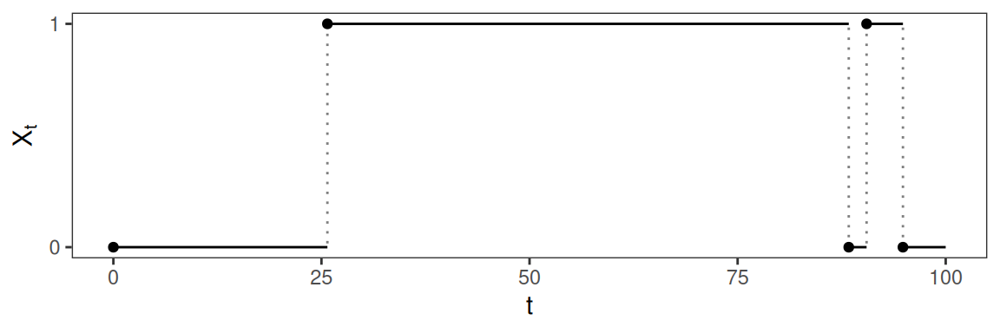
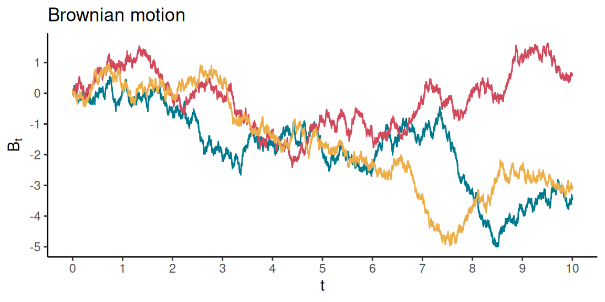
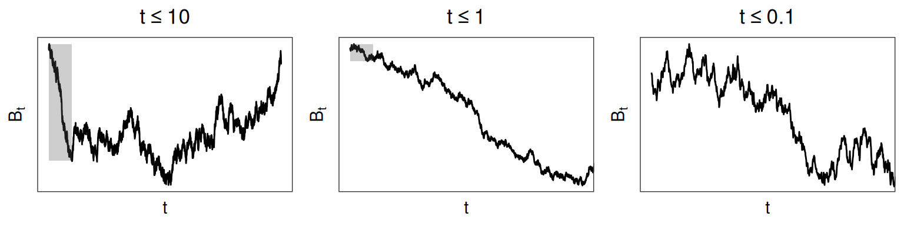

4 Continuous-time Markov processes
We will now describe continuous-time Markov processes, which include Poisson processes as a special case. We will continue using the letter \(t\) to represent time as a continuous variable (as opposed to the discrete index \(n\) in Chapter 2).
4.1 Introduction
4.1.1 Definition
The discrete-time Markov property is written in terms of a sequence of random variables defined over a regular time grid. It needs to be slightly modified in the continuous-time setting.
This is very similar to the definition of a discrete-time Markov chain. In the discrete-time case, we said that the process at time \(n + 1\) was independent of its values at times \(\{ 0, \dots, n - 1\}\) conditionally on its last value, i.e., at time \(n\). In continuous time, there is no canonical time interval, so the property is instead defined for three arbitrary times \(r \leq s \leq t\) on \([0, \infty)\). Given several past values of the process (\(X_s\) and \(X_r\)), only the most recent (\(X_s\)) is informative to write the distribution of the current value of the process (\(X_t\)).
Continuous-time Markov processes can be defined over countable (discrete) or uncountable (continuous) state spaces, and we will mostly focus on the countable case, where they are sometimes called “Markov jump processes” (because the process jumps between discrete values). We will talk about “jumps”, “switches”, and “transitions” interchangeably.
In this chapter, we will only consider time-homogeneous Markov chains, i.e., whose dynamics are constant through time.
4.1.2 Holding times
Just like in the discrete-time case, thinking about the distribution of holding times (i.e., times between state transitions) is useful to understand what realisations from a continuous-time Markov process look like. Let \(D_i\) be the holding time in state \(i\), i.e., the amount of time the process stays in state \(i\) before switching to another state. Unlike in the discrete-time case, \(D_i\) is a continuous variable here, defined over \([0, \infty)\). It turns out that the Markov property fully determines the distribution of holding times.
This property does not tell us what the rate of the exponential distribution is, or how we determine what state to jump to at the end of the holding time, so we don’t yet have enough information to simulate from a continuous-time Markov chain. We will answer those questions in the next section.
Figure fig-ex-ctmc shows an example of a 2-state continuous-time Markov process with \(\mathcal{S} = \{0, 1\}\). The times between state transitions do not occur on a predefined grid like in the discrete-time case; instead, they can occur at any continuous time.
4.2 Model specification
4.2.1 Transition rates
Because time is now continuous, there is a no particular time grid of interest over which to define transition probabilities. However, because we know that the holding times follow an exponential distribution, the model can instead be specified in terms of two sets of parameters:
- the rate parameter of the holding time distribution in each state \(i\);
- the probabilities of jumping from any state \(i\) to any other state \(j \neq i\), given that there is a transition.
With this in mind, a continuous-time Markov process can be described as follows. When the process enters some state \(i\), a waiting time is generated from an exponential distribution with rate parameter \(q_{ij} > 0\) for each other state \(j \neq i\), say \(D_{ij}\). Then, the process jumps to the state with the shortest waiting time (out of all the \(j \neq i\)). The holding time before a transition is therefore \(D_i = \min \{ D_{ij} \}_{j \neq i}\), and it can be shown that it follows an exponential distribution (as required by the Markov property), with rate \(q_i = \sum_{j \neq i} q_{ij}\) (proof in appendix). By property of the exponential distribution, the expected holding time in state \(i\) is \(1/q_i\).
Once we have generated a holding time \(D_i \sim \text{Exp}(q_i)\), then, how do we know which state to jump to after \(D_i\)? When it leaves state \(i\), the process switches to the state with the minimum waiting time; for each state \(j \neq i\), this occurs with probability \[ \widetilde{P}_{ij} = \frac{q_{ij}}{\sum_{k \neq i} q_{ik}} = \frac{q_{ij}}{q_i}. \] (The proof is in the appendix.) The discrete-time Markov chain with transition probabilities \(\widetilde{P}_{ij}\) is called the embedded chain, or sometimes the skeleton of the continuous-time process.
The dynamics of the process are therefore fully defined by the transition rates \(\{ q_{ij} \}_{i \neq j}\). A Markov process with finite state space of size \(\vert \mathcal{S} \vert = N\) has \(N \times (N - 1)\) such transition rates. It is convenient to write the transition rates in the form of a matrix where, by convention, the \(i^\text{th}\) diagonal entry is set to \(q_{ii} = -q_i\), \[ \boldsymbol{Q} = \begin{pmatrix} -q_0 & q_{01} & q_{02} & \cdots \\ q_{10} & -q_1 & q_{12} & \cdots \\ q_{20} & q_{21} & -q_2 & \cdots \\ \vdots & \vdots & \vdots & \ddots \end{pmatrix} \] such that the rows sum to zero: \(\sum_j q_{ij} = 0\) for all \(i \in \mathcal{S}\). \(\boldsymbol{Q}\) is called the transition rate matrix, or infinitesimal generator matrix of the process.
We can represent a continuous-time Markov chain as a directed weighted graph, where the edges are weighted by the transition rates. Unlike the transition graphs of Chapter 2, a transition rate graph never has arrows from one state to itself.
Example: Figure fig-ctmc-graph shows the transition rate graph of the continuous-time Markov chain with transition rate matrix \[ \boldsymbol{Q} = \begin{pmatrix} -3 & 1 & 2 \\ 0 & -1 & 1 \\ 3 & 1 & -4 \end{pmatrix} \]
graph LR; a((a)) -->|1| b((b)) a -->|2| c((c)) b -->|1| c c -->|3| a c -->|1| b
The label of each edge gives the transition rate, and can be interpreted as the frequency of the given transition in the long run. In this model, transitions from “a” to “c” are twice as frequent as transitions from “a” to “b”, transitions from “b” to “a” are prohibited, and transitions from “c” to “a” are three times as frequent as from “c” to “b”.
4.2.2 Simulating from a continuous-time Markov process
We now know how to simulate from a continuous-time Markov chain, given a transition rate matrix. At each iteration, we generate waiting times for each possible transition from exponential distributions, and the next state is the one with the shortest waiting time.
The following code simulates from a continuous-time Markov process with state space \(\{ 0, 1, 2 \}\) and transition rate matrix \[ \boldsymbol{Q} = \begin{pmatrix} -3 & 1 & 2 \\ 0.5 & -1 & 0.5 \\ 0.5 & 1 & -1.5 \end{pmatrix} \] We also need a way to choose the initial state, and here we specify the initial distribution as \((0, 1, 0)\), i.e., such that \(X_0 = 1\). The algorithm runs until it reaches \(t = 10\).
# Random seed for reproducibility
set.seed(46012)
# Setup parameters
tmax <- 10
u <- c(0, 1, 0)
Q <- matrix(c(-3, 1, 2,
0.5, -1, 0.5,
0.5, 1, -1.5),
nrow = 3, byrow = TRUE)
# Get tpm of embedded Markov chain
P <- Q
diag(P) <- 0
P <- P / rowSums(P)
# Initialise process
X <- sample(1:3, size = 1, prob = u)
times <- 0
t <- 0
# Iterate until tmax is reached
while(t < tmax) {
# Find current state
state <- X[length(X)]
# Get relevant transition rates
rates <- Q[state,]
# Generate holding time
hold <- rexp(n = 1, rate = - rates[state])
t <- t + hold
times <- c(times, t)
# Generate next state
next_state <- sample(1:3, size = 1, prob = P[state,])
X <- c(X, next_state)
}
cbind(time = times, state = X - 1) time state
[1,] 0.0000 1
[2,] 0.0328 0
[3,] 0.9036 2
[4,] 1.5036 1
[5,] 2.3095 0
[6,] 2.3215 2
[7,] 2.5936 1
[8,] 2.7502 2
[9,] 5.0843 1
[10,] 6.1075 0
[11,] 6.2490 2
[12,] 6.6047 1
[13,] 6.6405 2
[14,] 6.7729 1
[15,] 7.2082 2
[16,] 7.3074 1
[17,] 7.5605 0
[18,] 7.6258 1
[19,] 7.8005 2
[20,] 7.8194 0
[21,] 8.0623 2
[22,] 8.4593 0
[23,] 9.1294 2
[24,] 9.5034 1
[25,] 11.0512 0The output is a sequence of transition times, and the states to which the process jumps. This is all we need to know the value of the process at any time \(t \in [0, 10]\).
4.2.3 Explosive Markov chains
To illustrate this concept, consider the process defined over \(\mathcal{S} = \mathbb{N}\), with initial distribution \((1, 0, 0, \dots)\), and transition rate matrix \[ \boldsymbol{Q} = \begin{pmatrix} -1 & 1 & \cdot & \cdot & \cdot \\ \cdot & -2 & 2 & \cdot & \cdot \\ \cdot & \cdot & -4 & 4 & \cdot \\ \cdot & \cdot & \cdot & \ddots & \ddots \\ \end{pmatrix} \]
The chain starts in state 0, and then:
it switches to 1 after a holding time from Exp(1);
it switches to 2 after a holding time from Exp(2);
it switches to 3 after a holding time from Exp(4);
and so on.
The holding times will be shorter and shorter, in such a way that an infinite number of transitions can occur in a finite amount of time. To see this mathematically, denote as \(T_n\) the \(n^\text{th}\) holding time, and \(S_n\) the time of the \(n^\text{th}\) transition (i.e., \(S_n = T_1 + T_2 + \cdots + T_n\)). Then, \[ \begin{aligned} E[S_n] & = E \left[ \sum_{k = 1}^n T_k\right] \\ & = \sum_{k = 1}^n E[T_k] \\ & = \sum_{k=0}^{n-1} \frac{1}{2^k} \end{aligned} \] using the property that the expectation of an exponential random variable is the inverse of its rate. But \(\lim_{n \to \infty}E[S_n] = 2\) is finite, so an arbitrarily large number of transitions are expected to have happened by \(t = 2\).
In the following, we assume that the Markov processes are non-explosive. This is always the case for processes with finite state spaces; in the infinite case, we can ensure that \(\sup_i \{ q_i \} < \infty\), i.e., the transition rates are bounded by a finite number.
4.3 Behaviour at intermediate time scale
4.3.1 Transition probabilities
For a continuous-time Markov process, the transition probabilities can only be defined with respect to some chosen time interval, as there is no predefined time grid. Each transition probability is therefore a function of time. These are not the same as the transition probabilities of the embedded discrete-time Markov chain, and we might use the phrase “transition probability function” to make the distinction. We will see that transition probability function can be evaluated for any time \(t\) from the transition rates.
Remark: for any \(i \neq j\), we have \(P_{ij}(0) = 0\) and \(P_{ii}(0) = 1\), so \(\boldsymbol{P}(0) = \boldsymbol{I}\).
Because the transition probabilities are continuous functions of time, we can study them using tools from analysis. In fact, we can derive differential equations to describe the dynamics of the distribution of the chain through time. But first, we need the following result, which links each transition probability function to a transition rate.
Note that this proof provides an alternative definition of the transition rates, through the relationships \[ \begin{cases} P_{ij}(h) = q_{ij} h + o(h) \\ P_{ii}(h) = 1 - q_{i} h + o(h) \end{cases} \] Some books present continuous-time Markov chains first using the transition probability functions, and then define the rates using this formula. This is similar to the second (“little-o”) definition of Poisson processes that we saw in Chapter 3, and it says that, over a short time interval \(h\), the probability of jumping from state \(i\) to state \(j\) is approximately proportional to the transition rate \(q_{ij}\).
The Kolmogorov equations are differential equations with a familiar form; the scalar analogue is \(f'(t) = q f(t)\). Like in the scalar case, only one function satisfies this equation: the exponential. This gives us a convenient relationship between the transition probability functions and the generator matrix of a continuous-time Markov chain.
In other words, by definition of the matrix exponential, \[ \boldsymbol{P}(t) = \sum_{n=0}^\infty \frac{1}{n!} (t \boldsymbol{Q})^n = \boldsymbol{I} + t \boldsymbol{Q} + \frac{t^2}{2} \boldsymbol{Q}^2 + \frac{t^3}{6} \boldsymbol{Q}^3 + \cdots, \] which is, in general, not the same as taking the exponential of each element in \(t \boldsymbol{Q}\).
This is a very important result, as it gives a direct way to compute the transition probabilities of a continuous-time process over any time interval, in terms of the transition rate matrix. As required, this formula accounts for all possible sequence of events during that interval.
Computing matrix exponentials with high accuracy is a difficult general problem in numerical analysis, but we won’t worry about it here. There are many efficient algorithms, e.g., implemented in the R function expm() (from the eponymous package), and those work fine for our purposes.
4.3.2 Marginal distribution
The marginal distribution of \(X_t\) is the probability distribution \(\boldsymbol{u}(t) = (u_1(t), u_2(t), \dots)\) defined by \[ u_{j}(t) = \Pr(X_t = j),\quad \text{for all } j \in \mathcal{S}. \]
Like in discrete time, we can use the law of total probability to rewrite this as \[ \begin{aligned} u_j(t) & = \sum_{i \in \mathcal{S}} \Pr(X_t = j \mid X_0 = i) \Pr(X_0 = i) \\ & = \sum_{i \in \mathcal{S}} P_{ij}(t) u_i(0) \\ & = [\boldsymbol{u}(0) \boldsymbol{P}(t)]_j \end{aligned} \]
Finally, given the initial distribution \(\boldsymbol{u}(0)\) and the transition rate matrix \(\boldsymbol{Q}\), the distribution of \(X_t\) can then be computed as \[ \begin{aligned} \boldsymbol{u}(t) & = \boldsymbol{u}(0) \boldsymbol{P}(t) \\ & = \boldsymbol{u}(0) \exp(t \boldsymbol{Q}). \end{aligned} \]
4.4 First step analysis
We may be interested in the hitting probabilities and mean hitting times of a continuous-time Markov chain, particularly if it has absorbing states.
The study of hitting probabilities in continuous time is based on the observation that the probabilities do not depend on the time spent in each state, but only on the transition probabilities of the embedded chain. That is, the hitting probabilities of the continuous-time Markov chain are equal to the hitting probabilities of the embedded chain, and we can use results from Chapter 2 to compute them.
For convenience, we provide an alternative statement in terms of transition rates directly.
The mean hitting times cannot be directly computed from the embedded chain in a similar way, because the holding times (between transitions) are important. It is still possible to derive an analogous relationship to compute mean hitting times from the transition rates.
4.5 Long-term behaviour
Like for their discrete-time counterparts, we are often interested in the long-term properties of continuous-time Markov chains, and in particular the convergence of the distribution of the process to some limit. Many discrete-time results have a continuous-time version, and we go over them more briefly in this chapter.
It is usually more useful to rewrite this definition in terms of the transition rates, rather than the transition probabilities.
This last result gives us a practical method to find the stationary distribution of a continuous-time Markov process based on its transition rate matrix, by solving a system of linear equations.
Now that we have defined what a stationary distribution distribution is, we turn to its connection to the long-term behaviour of the chain in the following two theorems. The properties of communication, irreducibility, transience and recurrence are defined in the same way as for discrete-time chains; and note that periodicity does not exist in continuous time.
This limit theorem explains the phenomenon observed in a previous example that each row of \(\boldsymbol{P}(t)\) seems to converge to the same distribution as \(t \to \infty\). It offers an alternative, pragmatic method to compute the stationary/limiting distribution of an irreducible continuous-time Markov process: compute \(\exp(t \boldsymbol{Q})\) for some large \(t\).
So, like in the discrete-time case, the stationary distribution gives the long-run proportion of time spent in each state.
In R, the function solve() can be used to solve for \(\boldsymbol{x}\) in linear equations of the form \(\boldsymbol{Ax} = \boldsymbol{b}\), where \(\boldsymbol{x}\) and \(\boldsymbol{b}\) are vectors of length \(N\), and \(\boldsymbol{A}\) is an \(N \times N\) matrix. You should think about how a system of equations like the one in the example above can be rewritten in this form (i.e., what form \(\boldsymbol{A}\) and \(\boldsymbol{b}\) take).
4.6 Continuous state space: Brownian motion
Many well-studied continuous-time Markov processes are defined over an uncountable state space, e.g., \(\mathcal{S} = \mathbb{R}\) or \(\mathcal{S} = [0, \infty)\). This formulation is useful in situations where the phenomenon of interest is continuous, such as the value of a stock price, or the position of a particle in space. An important class of continuous-time continuous-space Markov processes is diffusion processes, which have been widely used in fields such as physics, biology, and finance. Brownian motion is the building block of all diffusion processes, and we introduce it briefly in this section.
The motivation for Brownian motion was the observation (by 19th century biologist Robert Brown) that particles of pollen in water follow erratic and seemingly random trajectories. This phenomenon is caused by collisions with water molecules, and it was first described mathematically in the early 20th century by Albert Einstein. The properties of the resulting process were further explored by Norbert Wiener, and Brownian motion is also called the Wiener process.
The additional condition that \(B_0 = 0\) is also sometimes included in the definition of Brownian motion. More generally, we can assume that \(B_0\) is specified as part of the model formulation as an initial condition.
The properties of Brownian motion suggest the following method to generate sample paths from the process over some time grid \(t_0, t_1, \dots, t_n\). We start from some intial condition \(B_{t_0} = b_0\), and, for \(i = 0, \dots, n - 1\),
generate a normally distributed increment \(\varepsilon_i \sim N(0, t_{i+1} - t_i)\);
compute the next value of the process as \(B_{t_{i+1}} = B_{t_i} + \varepsilon_i\).
This algorithm can for example be implemented in R using the random number generator rnorm(). This is very similar to the procedure used in Chapter 2 to simulate from a (discrete-time) Gaussian random walk, and Brownian motion can be viewed as the continuous-time analogue. Note that, here, we can sample the path over an arbitrarily fine time grid. Figure fig-bm shows three simulated realisations from a standard Brownian motion with initial condition \(B_0 = 0\), over \(t \in [0, 10]\). The three paths start from 0, and they spread more and more as they fluctuate randomly through time.

One key feature of Brownian motion is its scaling property: no matter how much we “zoom in”, the process is still a Brownian motion.
The rescaling property of Brownian motion is illustrated in Figure fig-bm-scales. No matter how much we zoom into a Brownian motion path, the behaviour of the process is the same, in the sense that it has independent, normally distributed increments with variance proportional to the length of the time interval. Brownian motion can be viewed as part of the general mathematical family of fractals.

It turns out that the rescaling property of Brownian motion implies that its paths are nowhere differentiable, even if it is continuous everywhere. We will not prove this result, but it relies on the following intuition. The derivative of the process can be defined as \[ \frac{d}{dt} B_t = \lim_{h \to 0} \frac{B_{t+h} - B_t}{h}. \] By definition of Brownian motion, \(B_{t+h} - B_t\) has a normal distribution with mean 0 and variance \(h\). So, \((B_{t+h} - B_t) / h\) is also normally distributed with mean 0 and, using \(Var[aX] = a^2 Var[X]\), we have \[ Var \left[ \frac{B_{t+h} - B_t}{h} \right] = \frac{1}{h^2} Var[B_{t+h} - B_t] = \frac{1}{h}. \] As \(h \to 0\), the variance tends to \(\infty\). The normal distribution with infinite variance is not well defined, so the derivative does not exist.
4.7 Problems
I have been observing Hamlet, my parrot, and I have noticed that, over time, he engages in three types of behaviour: resting, feeding, and singing. In addition, I have made the following observations:
the average time spent in each behaviour (before switching to another behaviour) is 2 hours for resting, 5 minutes for feeding, and 20 minutes for singing;
when Hamlet is done resting, he is 4 times more likely to start feeding than singing;
when he is done feeding, he always starts singing;
when he is done singing, he is 2 times more likely to start resting than feeding.
We assume that Hamlet’s behaviour can be described by a continuous-time Markov chain.
What is the distribution of holding times in each of the three behavioural states?
What is the transition rate matrix of the continuous-time Markov chain?
I check on Hamlet at 3pm and see that he is feeding. Given only this information, what is the distribution of the Markov chain at 3:30pm?
Following from the previous question, let’s now say that, at 3:30pm, I also know that Hamlet is not currently singing (because I can’t hear him from the next room). Given this additional information, what is the distribution of the Markov chain at 3:30pm?
What is the long-term proportion of time that Hamlet spends in each behavioural state?
Let \((X_t)\) be the continuous-time Markov chain with state space \(\{0, 1\}\) and transition rate matrix \[ \boldsymbol{Q} = \begin{pmatrix} -2 & 2 \\ 3 & -3 \end{pmatrix}. \] Note that \(\boldsymbol{Q} = \boldsymbol{VDV}^{-1}\) where \[ \boldsymbol{V} = \begin{pmatrix} 1 & 1 \\ -\frac{3}{2} & 1 \end{pmatrix} \quad\text{and}\quad \boldsymbol{D} = \begin{pmatrix} -5 & 0 \\ 0 & 0 \end{pmatrix}. \]
Derive the transition probability matrix \(\boldsymbol{P}(t)\) of the process, as a function of \(t\). Hint: if \(\boldsymbol{M} = \boldsymbol{ABA}^{-1}\) for some diagonal matrix \(\boldsymbol{B}\), then \(e^{\boldsymbol{M}} = \boldsymbol{A} e^{\boldsymbol{B}} \boldsymbol{A}^{-1}\). Also, a diagonal matrix can be exponentiated element-wise.
Use the result from question (a) to compute the limiting distribution of the process.
Compute \(\Pr(X_{0.6} = 1, X_{0.3} = 0 \mid X_{0.1} = 1)\).
Assuming that \(X_0 = 1\), which state is the process most likely to be in at time \(t = 0.3\)? What about at time \(t = 0.4\)?
Consider the continuous-time Markov chain \((X_t)\) with state space \(\{0, 1, 2, 3\}\) and transition rate matrix \[ \boldsymbol{Q} = \begin{pmatrix} -3 & 3 & 0 & 0 \\ 0.2 & -0.6 & 0.1 & 0.3 \\ 0.5 & 0 & -1.5 & 1 \\ 0 & 0 & 0.5 & -0.5 \end{pmatrix} \]
What is the transition probability matrix of the embedded discrete-time Markov chain?
Given that the process starts in state 0, what is the probability that it will be back in state 0 after 6 transitions?
What is the limiting distribution of \((X_t)\)? What is the limiting distribution of the embedded discrete-time Markov chain?
We decide to model an individual’s health status with a continuous-time Markov chain with three states: “susceptible” (the person can become infected), “infected”, and “recovered” (the person is temporarily immune). Based on previous studies on the disease of interest, the estimated rate matrix (in transitions per month) is \[ \boldsymbol{Q} = \begin{pmatrix} -1 & 1 & 0 \\ 0 & -2 & 2 \\ 0.2 & 0 & -0.2 \end{pmatrix}. \]
Simulate a realisation from this process over a period of 30 months. Specifically, the output of the simulation should be a vector of values of the process, \(X_t\), over the following grid of times: \(t \in \{0, 0.05, 0.1, 0.15, 0.2, \dots, 29.9, 29.95, 30\}\).
Repeat this simulation 1000 times, representing the health status of 1000 patients. Plot the number of infected patients (out of 1000) against time over the 30-month period.
Let \((X_t)\) be a continuous-time Markov chain with state space \(\{ 1, 2, 3 \}\) and transition rate matrix \[ \boldsymbol{Q} = \begin{pmatrix} -2 & 0.5 & 1.5 \\ 1 & -1 & 0 \\ 0.5 & 0.5 & -1 \end{pmatrix} \]
What is the direction of change of the functions \(P_{12}(t)\) and \(P_{13}(t)\) at \(t = 0\) (i.e., are they increasing or decreasing)?
Which of these two functions has the largest slope (in absolute value) at \(t = 0\)?
Appendix: some proofs
Ross, Sheldon M. 2019. Introduction to Probability Models, 12th Edition. Academic Press.